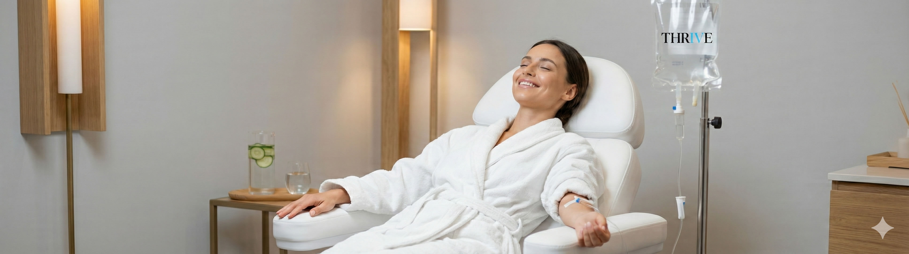

Physician-supervised intravenous vitamin therapy for energy, immunity, and athletic recovery
IV therapy delivers vitamins, minerals, and nutrients directly into your bloodstream for 100% absorption—bypassing the digestive system entirely. At Thrive 4 Peak Performance, every infusion is prepared with pharmaceutical-grade ingredients and administered by licensed medical professionals.
Serving Alpharetta, Milton, Roswell, and Johns Creek with board-certified physician oversight.
Replenishes fluids faster than drinking water, ideal for athletes and busy professionals
B-complex vitamins and nutrients restore cellular energy production
High-dose vitamin C and zinc strengthen your body's natural defenses
Reduces muscle soreness and inflammation after intense workouts
NAD+ and amino acids support cognitive function and focus
Glutathione and antioxidants protect cells from oxidative stress
Best for: Energy, immunity, overall wellness
Magnesium, calcium, B-vitamins, vitamin C
Best for: Anti-aging, brain health, addiction recovery
Pure NAD+ (varies by dosage)
Best for: Pre/post workout, endurance
Amino acids, B-complex, electrolytes, vitamin C
Best for: Cold/flu prevention, travel
High-dose vitamin C, zinc, B-vitamins
Best for: Skin health, anti-aging
Glutathione, biotin, vitamin C, B-complex
Best for: Dehydration, nausea
Fluids, electrolytes, anti-nausea medication, B-vitamins
Medical screening required before first session
Most IV infusions take 30-45 minutes. NAD+ therapy may take 2-4 hours depending on dosage.
You'll feel a small pinch when the IV is inserted. Most patients find it no more uncomfortable than a blood draw. Once the IV is in, you can relax, work on your laptop, or scroll your phone.
Frequency depends on your goals. Many patients start with weekly sessions, then move to bi-weekly or monthly maintenance. Our physicians provide personalized recommendations.
Yes, when administered by medical professionals. We use pharmaceutical-grade ingredients, sterile equipment, and screen all patients for contraindications before treatment.
Most IV therapy is considered elective wellness and not covered by insurance. We provide itemized receipts for HSA/FSA reimbursement and can assist with insurance submission.
Schedule your complimentary consultation to discuss which formula is right for you
Book Free ConsultationOr call us at (470) 359-6195